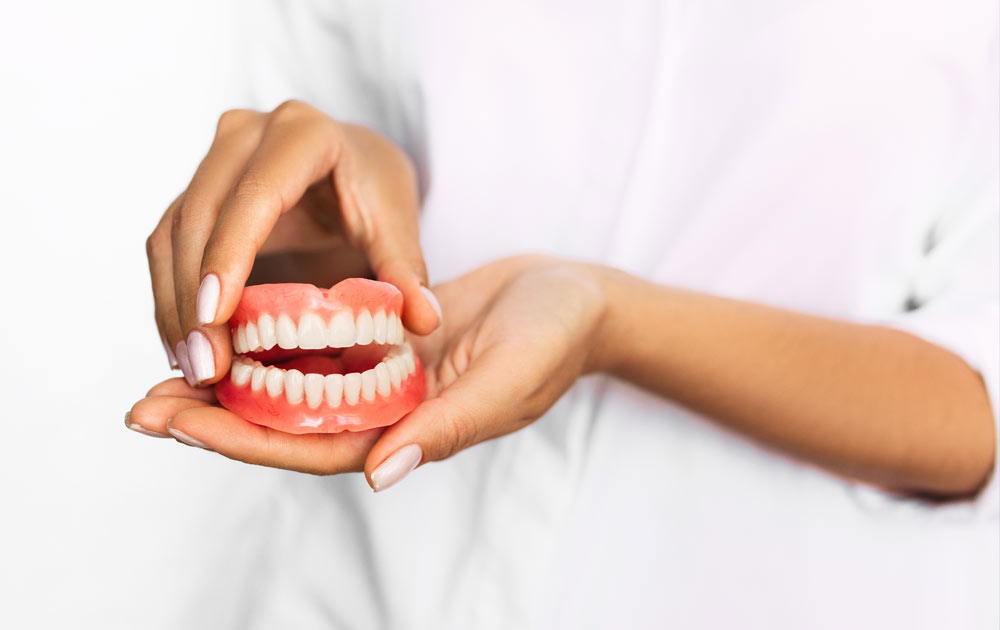

Exodoncia
La exodoncia es una técnica odontológica que consiste en la extracción de un diente dañado o que presenta problemas para la salud bucodental del paciente. Se trata de una intervención quirúrgica basada en la extracción de una pieza dental de la cavidad bucal.
Endodoncia
La endodoncia es un procedimiento que tiene como finalidad preservar las piezas dentales dañadas, evitando así su pérdida. Para ello, se extrae la pulpa dental y la cavidad resultante, se rellena y sella con material inerte y biocompatible.
Periodoncia
Es una especialidad de la odontología que estudia la prevención, diagnóstico y tratamiento de las enfermedades que afectan de una forma u otra a las encías, al cemento radicular y al hueso alveolar.
Operatoria
La Operatoria Dental es la disciplina de la Odontolo- gía que se dedica a diagnosticar, prevenir y restaurar lesiones, alteraciones o defectos que pueden sufrir las piezas dentarias, para devolver su forma, función y estética dentro del sistema estomatognático, en ar- monía con el tejido adyacente.
Protesis
Una prótesis dental es un elemento artificial destinado a restaurar la anatomía y funcionalidad de una o varias piezas dentarias, restaurando también la relación entre los maxilares, a la vez que devuelve la dimensión vertical, y repone los órganos dentarios
Pediatria
Los dentistas pediátricos están dedicados a la salud bucal de los niños desde el nacimiento hasta la adolescencia. Tienen la experiencia y la preparación para atender los dientes, encías y bocas de los niños durante las varias etapas de la infancia